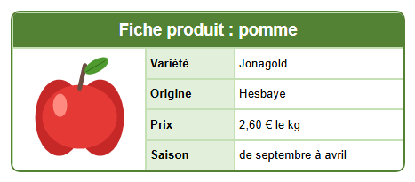

Parcours d'apprentissage › Leçon 5
Images

Les boutons pour les images
Vous les trouvez dans l'onglet  Cellule (C).
Cliquez d'abord sur la cellule où l'image doit aller.
Cellule (C).
Cliquez d'abord sur la cellule où l'image doit aller.
 Ajouter une image : choisissez un fichier (png, jpg, gif ou bmp).
Ajouter une image : choisissez un fichier (png, jpg, gif ou bmp).

 image à gauche, au centre ou à droite dans la cellule.
image à gauche, au centre ou à droite dans la cellule. Taille de l'image : Image original (taille réelle),
Image fit (ajustée à la cellule, sans déformation) ou Image stretch (étirée sur toute la cellule).
Taille de l'image : Image original (taille réelle),
Image fit (ajustée à la cellule, sans déformation) ou Image stretch (étirée sur toute la cellule). Supprimer l'image : retire l'image de la cellule.
Supprimer l'image : retire l'image de la cellule.
À vous de jouer
- Créez un tableau de 3 colonnes et 5 lignes. Fusionnez la ligne du haut pour le titre.
- Dans la première colonne, fusionnez les cellules des lignes 2 à 5 : c'est là que va l'image.
- Rendez la première colonne assez large (faites glisser dans les en-têtes de colonnes) et les lignes assez hautes.
- Cliquez sur la grande cellule puis sur Ajouter une image.
Choisissez le fichier
appel.pngdans le dossierlessen\afbeeldingen. - Cliquez sur pour centrer l'image.
- Tapez les informations dans les autres cellules : variété, origine, prix et saison.
html\images
à côté du programme, pour que votre conception continue à fonctionner si vous déplacez l'original. Dans le code HTML,
l'image elle-même est intégrée : votre page web est donc un seul fichier, sans images séparées.Quelle image choisir ?
- Utilisez une petite image : une photo de votre téléphone est bien trop grande pour une cellule et alourdit la page.
- Un png à fond transparent s'adapte joliment à toutes les couleurs de cellule.
- N'utilisez que des images que vous avez créées vous-même ou que vous avez le droit d'utiliser.
Exercice
Transformez-la en fiche produit d'une poire : remplacez l'image par peer.png du dossier
lessen\afbeeldingen et adaptez le texte. Essayez ensuite Image stretch : qu'est-ce qui ne va pas ?
Solution
Cliquez sur la cellule de la pomme puis sur Ajouter une image : la nouvelle image remplace l'ancienne.
Choisissez peer.png et adaptez la variété (par ex. Conférence), le prix et le titre. Avec Image stretch,
l'image est étirée sur toute la cellule : la poire s'élargit et paraît déformée. Choisissez donc Image fit
quand l'image ne tient pas dans la cellule.
Vous travaillez sous Linux ? Ouvrez alors l'exemple vous-même avec Ouvrir le concepteur de tableau : dossier
lessen/fr, fichier les05-productfiche.htd.